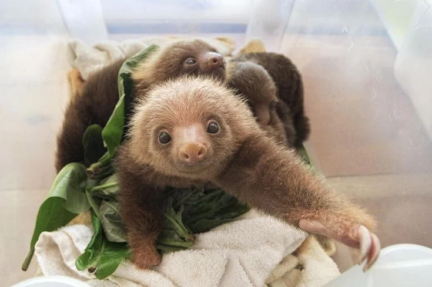

Paresseux à deux doigts
Plus grands et légèrement plus actifs, ils descendent plus souvent au sol. On distingue deux espèces : le paresseux de Linné et le paresseux d'Hoffmann.
- Longueur : 60 à 70 cm
- Poids : 4 à 8 kg
- Actifs plutôt la nuit